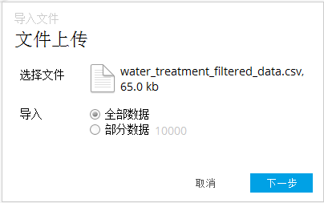
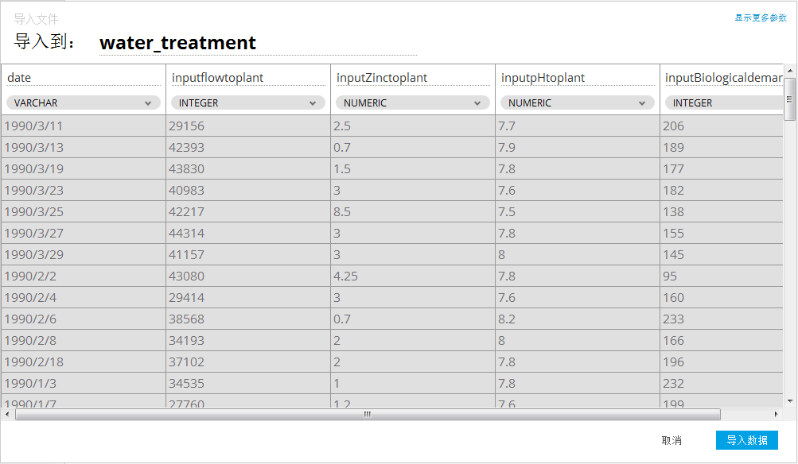

导入至数据库
用户具有建模师角色才能上传和导入数据集。以下步骤指导上传和导入数据。
- 浏览到模式（schema），点击“导入文件”。
- 从本地选择一个文件。当文件完成上传，点击“下一步”。

- 下面的对话框显示了将要导入数据的预览。
- Alpine会猜测数据每列的分隔符，用户也可以自选分隔符。
- 通过点击“显示更多参数”，用户可自定义分隔符、转义字符和引号字符。用户还可以决定导入的文件是否含有表头。针对每一列，用户可以修改名称、数据类型。如果某列的值为空值，此列也能成功导入。点击“导入数据”，进行导入。
- 点击“导入数据”，进行导入。
- 导入完成时，用户收到提示信息（toast style message）。
